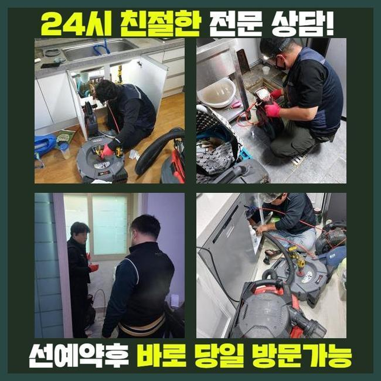
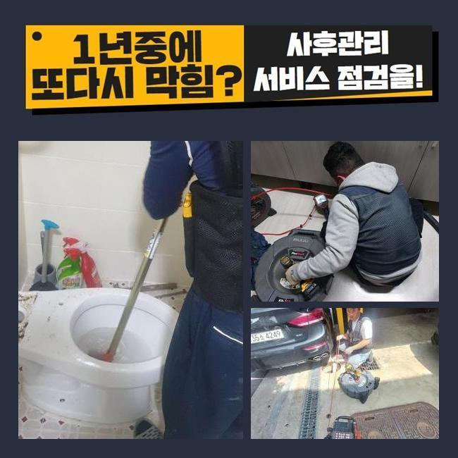
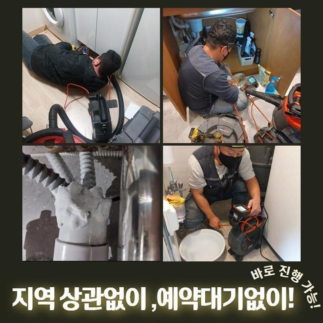
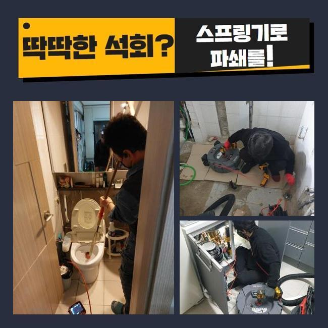
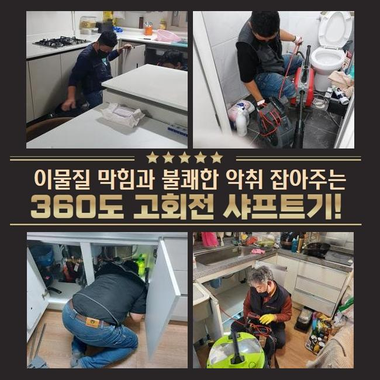
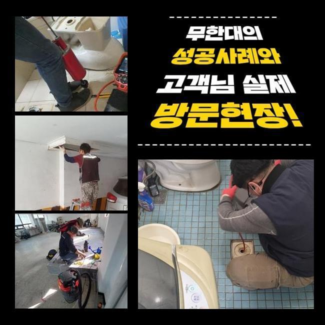

🏠 영도 싱크대역류 변기부속품교체 샤워실하수구막힘 주방수전교체
용인 싱크대막힘 전문 시공 후기

📋 작업 개요
- 위치: 용인
- 서비스 유형: 싱크대막힘, 변기막힘, 하수구막힘, 배관막힘, 역류해결, 뚫는업체, 배관청소, 고압세척, 설비공사, 악취차단
- 작업 일시: 2025. 1. 3. 1:35
- 업체명: 하수구수사대 (010-5615-2118)
🔍 문제 상황
영도 싱크대역류 변기부속품교체 샤워실하수구막힘 주방수전교체
쉼의 공간이 되어야할 주거지에서 간헐적으로 생겨나는 고장들이 있습니다
그것들 중 배관막힘을 말씀드릴수 있어요
물막힘이 생겨나면 오취가 퍼지는것을 비롯하여 생활중의 불편을 증가시키죠
하수관이 막힌상황으로 인하여 욕실사용도 어려워지고 역류마저 나타난다면 더욱더 사태는 악화일로로 가게되겠죠
본 글에서는 투룸 세탁실 배관막힘으로 여러가지의 장비류를 적용해서 처치한 절차를 설명드리려 해요
의뢰인께선 주방시설 근처에 설비된 세탁기 배수관에서 막힘이 생겼다며 저희팀에 문의를 넣으셨는데요
작업차 안에 샤프트분쇄기와 석션장비 및 내시경설비를 실은 뒤 고객님의 위치로 출발하였죠
당도하니 오취가 가득한 상황이었고 역류까지 되는 정황을 확인할수 있었죠
세탁버튼을 눌러서 배수하려고 시도했으나 외려 토출되는 사태가 나타났다 설명하셨죠
간단하게 물만 방출되는게 아니었고 크고작은 노폐물까지 방출되는 상황이었죠
특정한 주거지역에선 세탁실과 주방시설의 배수관이 이어진 상황도 볼수 있답니다
그것 또한 점검해보기로 했죠
막힘문제를 면밀하게 알아보려 의뢰인께 싱크대 쪽이나 여타 배수관에 문제가 생겨났거나 역류등이 일어난적은 없었나 여쭤봤어요

🔎 원인 분석
💡 전문가 진단: 정밀 진단 장비를 사용하여 슬러지의 고착 여부를 판명하고 타격/세척 작업을 실시했습니다.
며칠전에 배수문제로 상점에서 구입한 뚫어뻥과 베이킹소다를 부어본적이 있다고 하셨죠
그것을 근거로 개수대쪽의 배관에 막힘의 원인이 있을거란 판단이 들었어요
저희팀이 내방한데의 정체를 처치하려 사유를 살피기로 했죠
배관내시경을 활용하여 파이프 내측을 조사하기로 한거죠
배수공이 차단되어 내시경마저 안들어갈땐 물청소가 가능한 고압흡입기로 배수관의 오물들을 처리하게 됩니다
이러한 과정으로 수리시간을 단축할수 있답니다
세정중 다양한 오물들과 찌꺼기들이 방출되었답니다
그렇지만 이것만 가지고서는 근본적인 물막힘 사유가 어떠한건지 밝혀내지는 못했답니다
일차로 진행한 셕션기기로 처리못하는게 많았기에 곧바로 내시경카메라를 집어넣어서 역류가 발발한 배수관을 관찰하기로 했어요
잔재들을 세밀하게 분석해보니 바닷가쪽에서 나오는 모래 성분이었답니다
빨래를 하시다가 방출된 것들일 여지가 높았어요
손님께 휴가를 다녀오셨나 물었더니 뻘이 많은 해변가에 놀러가셨다고 말해주셨어요
우선 눈에보이는 이물질을 제거하였고 좀더 실질적으로 뚫음시공을 실행합니다
그리고 배관깊은 지점까지 처치가능한 테크닉과 장비를 쓰기로 결정했죠

🔧 작업 과정
내시경cctv를 활용하는 까닭은 배관전체의 문제점을 분명히 파악하고 물막힘을 해소하려는 목적인데요
흡입장비로 세척을 끝내고 가는 호스줄에 결속된 내시경cctv를 이용하여 하수구 하단부를 검사하였답니다
배관 곳곳을 진단해보았고 근본적인 트러블의 사유를 찾아낼수가 있었어요
이처럼 물막힘과 역류는 여러 변수에 의하여 나타나게 되며 처리방책이 단조로운것도 아니에요
그렇기때문에 전문적인 테크닉과 장비를 토대로 수선을 이행해야 순탄하게 마무리지을수가 있죠
만일에 대충대충 막힘문제를 정리하려든다면 상황이 증가할수 있단 것을 염두에 두시길 바라요
관로 안쪽을 내시경cctv로 점검하고 있답니다
하수관의 총길이는 생각한것보다 크고 형태도 복잡해서 직관적으로 인지하기에는 한계점이 있답니다
그럴때에 콤팩트한 내시경cctv가 커다란 구실을 수행할수가 있는거죠
내시경기기를 이용해서 내측을 자세하게 파악해보니 여러종류의 슬러지와 잔모래같은 이물들이 뒤엉켜있는 모습이었습니다
이 슬러지들은 배수되기 어렵고 바위와 같이 고착화되기 쉽습니다
자그마한 성분들은 배수가 되어서 정화조쪽으로 향하겠지만 일시에 그 성분들을 투입시켜버린다면 이처럼 막힘이 생길수 있는거죠
게다가 그상황이 누증되면 하수관에 고착화된 노폐물 막이 생성되기도 하죠
찌꺼기의 성질에따라서 적용하는 기계가 달라져요
예시를 들어 헝겊등의 커다란 부피의 물체가 막혀있다면 고리가 달린 도구를 써서 끄집어낸 뒤에 흡입장비로 하수구 하단부를 청소해야 됩니다
만일에 이런 방식을 쓰지않고 샤프트기기를 바로 적용해버리면 배관안이 더욱더 안좋아질수 있답니다
찌꺼기들이 뭉텅이처럼 많이 모여있다면 자그마한 크기로 분쇄시키는 시공을 속행하는데요
해당 세대는 흙더미들과 함께 혼합되어 있어서 그것들을 샤프트장비를 동원하여 소제한다음에 뚫어보기로 하였습니다
이곳에서는 전체 이물들을 없앤다음에 내시경기기로 또다시 진단을 실시했어요
그러고나서 남아있는건 분쇄기기로 말끔히 처리하고 즉각 물이 잘 내려가는지 확인하였는데요
다량의 물도 시원하게 빠져나가는걸 확인하였습니다
작업중에 발생한 잔재들을 전체적으로 소거하고 분리폐기하는걸로 공사를 마무리하였죠


✅ 작업 완료
위의 정체문제를 사전적으로 막기 위해서는 정기적으로 하수구 진단해보았고 세척해야 하겠죠
주방과 연결된 관로에서는 기름찌꺼기들이 고착화되어서 역류까지 일으키는 경우가 허다하죠
이럴때에는 망설이지말고 즉각 전문가를 찾아보시는게 바람직합니다
자체적으로 처리할수있는 방안은 제한이 뒤따르고 더더욱 사태가 안좋게되는 경우도 빈번하기 때문이죠
배관업체의 스케일링 및 고압청소는 단순히 일상을 편안하게 해주는걸 넘어 청결을 지속하는데 필수적인 역할을 수행합니다
그것에 더하여 막힘문제가 계속 방치되면 인접세대에도 곤란한 상황을 야기할수 있다는것을 기억하셔야 해요




⚠️ 주방 싱크대 배관 막힘 예방 수칙
- ✅ 기름기가 묻은 식기나 프라이팬은 설거지 전 키친타올로 반드시 기름때를 닦아내세요.
- ✅ 주기적으로 싱크대 개수대에 뜨거운 물을 가득 받아 한 번에 내려 배관 내부 기름을 씻어내세요.
- ✅ 배수구 거름망을 미세한 필터로 사용하시고 음식물 찌꺼기가 틈으로 새어 들지 않게 관리하세요.
- ✅ 베이킹소다와 식초를 뜨거운 물과 함께 일주일에 한 번씩 부어주면 배관 살균과 막힘 예방에 좋습니다.
💡 핵심 정리
- 확실한 장비 작업(내시경 점검 및 샤프트 스케일링)으로 원인을 뿌리 뽑습니다.
- 작업 후 1년 이내에 동일한 부위 재발 시 100% 무상 A/S 서비스를 보장합니다.
- 서울 · 경기 · 인천 전 지역에 24시간 언제든 긴급 출동할 수 있도록 항시 대기 중입니다.
❓ 자주 묻는 질문 (FAQ)
🚨 용인 싱크대막힘 문제로 고민이신가요?
정확한 원인 진단과 확실한 시공으로 재발 없는 해결을 약속드립니다.
24시간 긴급 출동 | 서울 · 경기 · 인천 전지역 | 1년 내 재발 시 무상 A/S